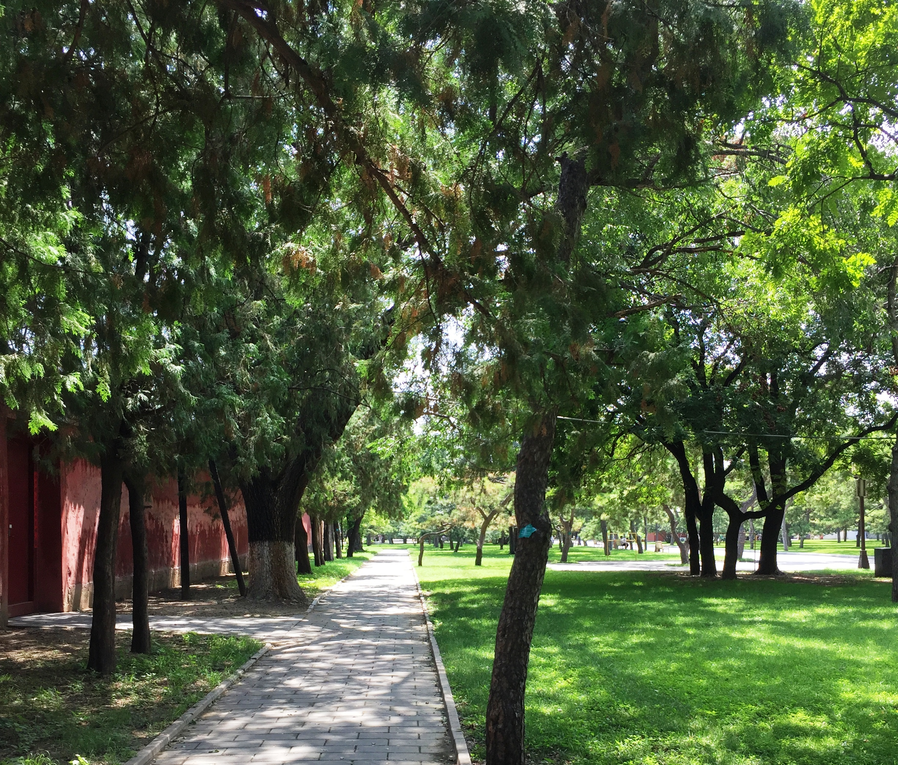

Find Your Inner Light
Path of Yoga Studioprovides all levels of yoga practice in a tranquil, peaceful environment. Whether you are new to yoga or an experienced practitioner, our dedicated instructors can develop a practice to meet your needs. Let your inner light shine at the Path of Light Yoga Studio.
- Hatha, Vinyasa, and Restorative Yoga classes
- Drop-ins Welcome
- Mats, blocks, and blankets provided
- Relax in our Serenity Lounge before or after your class
Company & Person
Path of Light Toga Studio
612 serenity Way EI Dorado AZ 86336
888-999-5555
Path of Light Toga Studio
612 serenity Way EI Dorado AZ 86336
888-999-5555